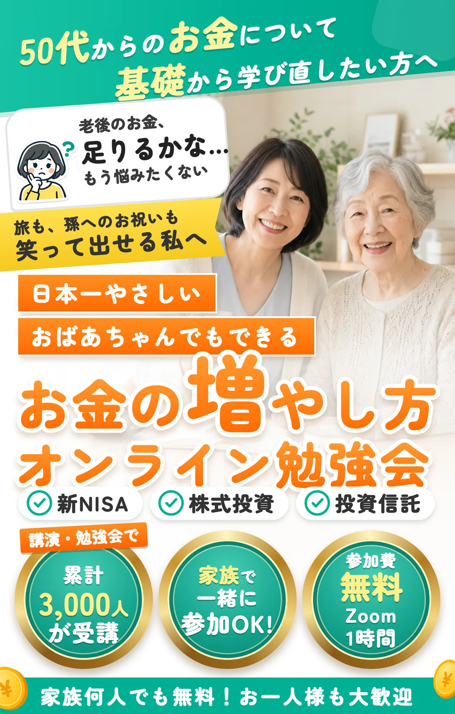
無料・顔出し不要・1回1〜3名LINEで日程を受け取るスマホだけで参加できます
LINEが開いたら「追加」を押すだけ。
すぐに日程が届きます。
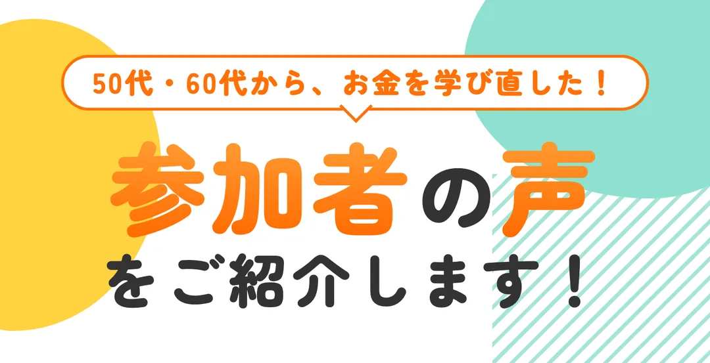
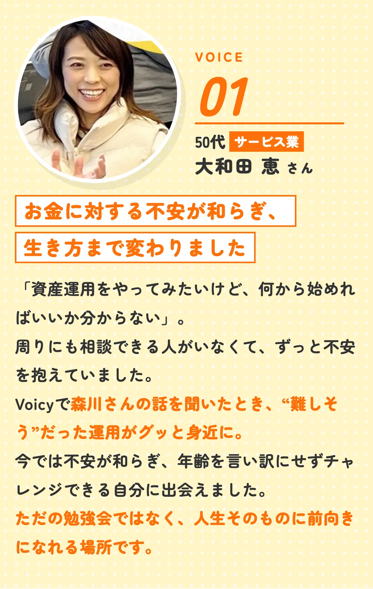
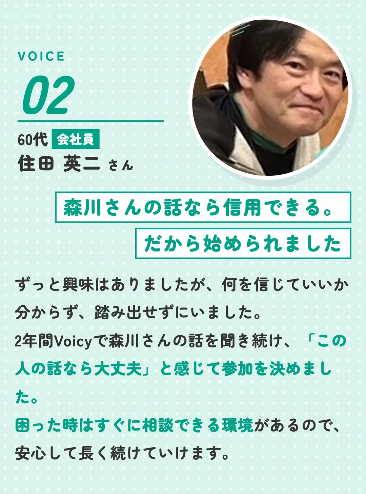
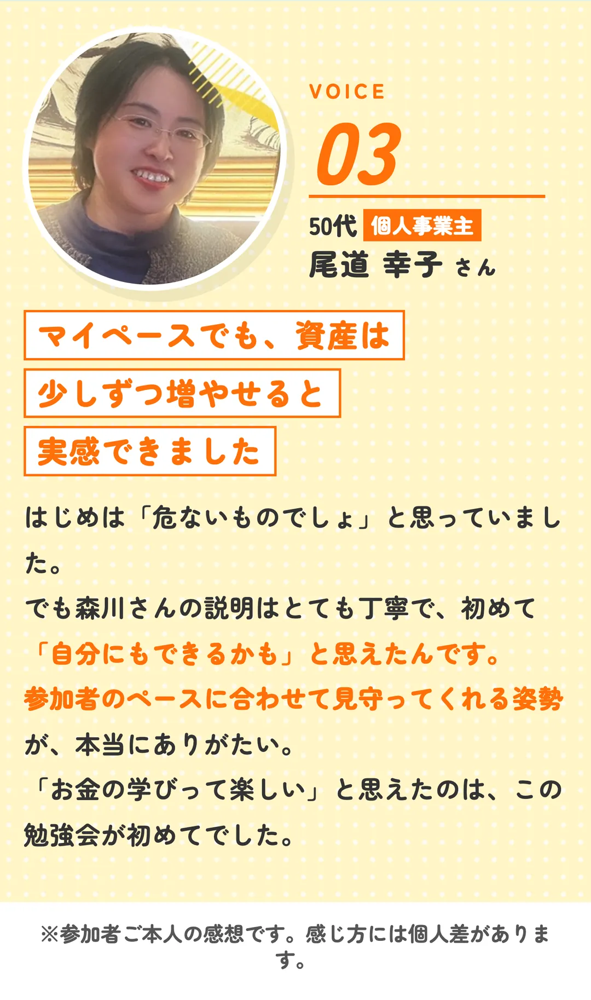
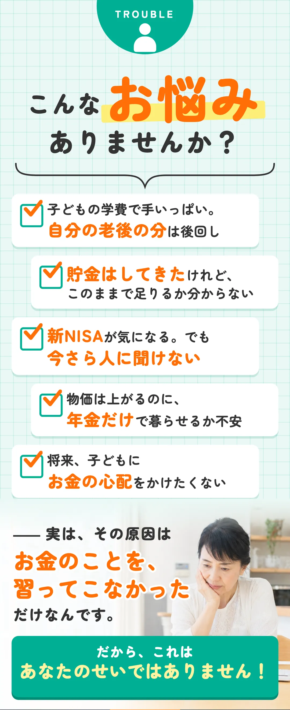
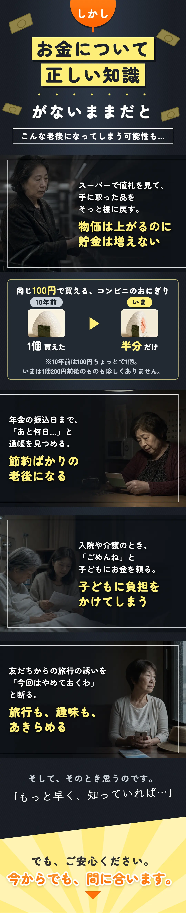
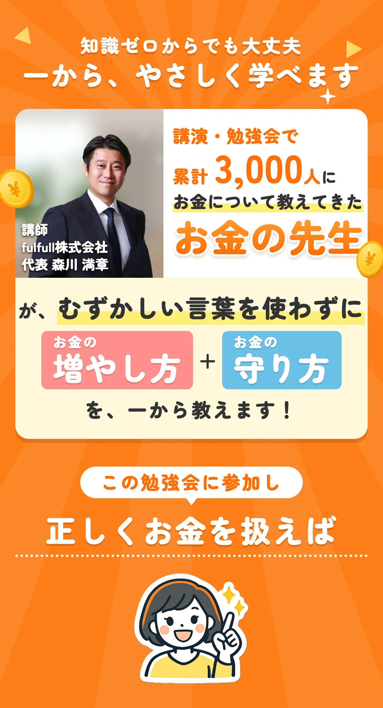
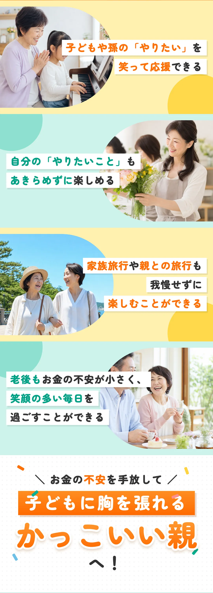
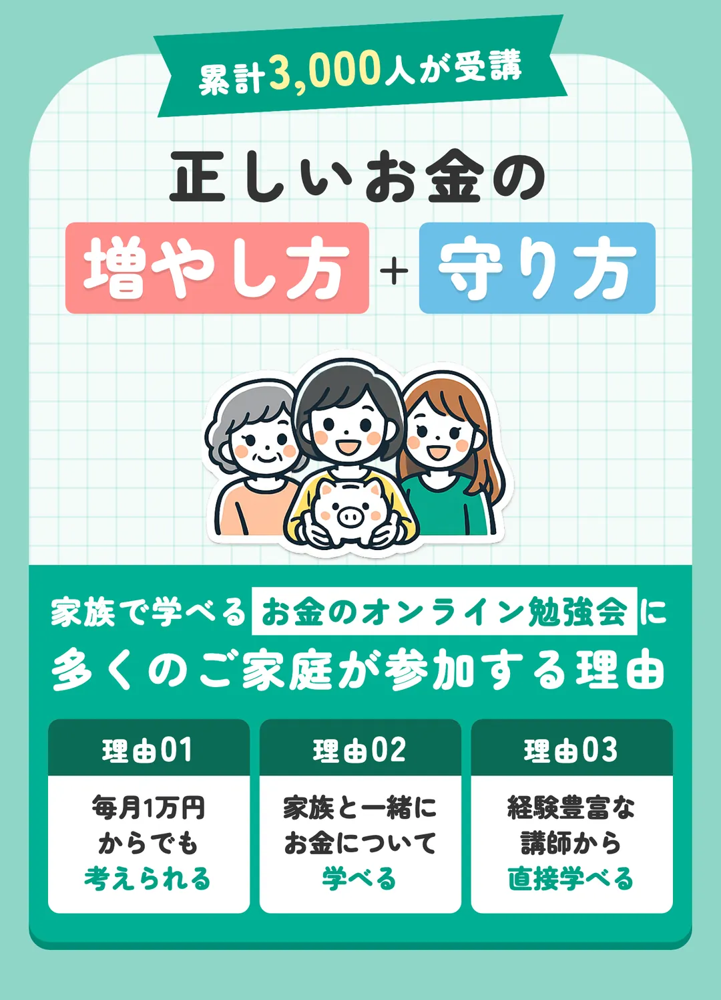
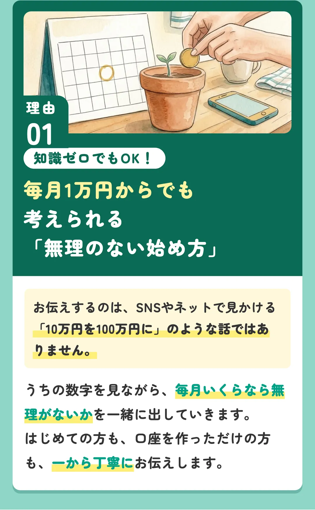
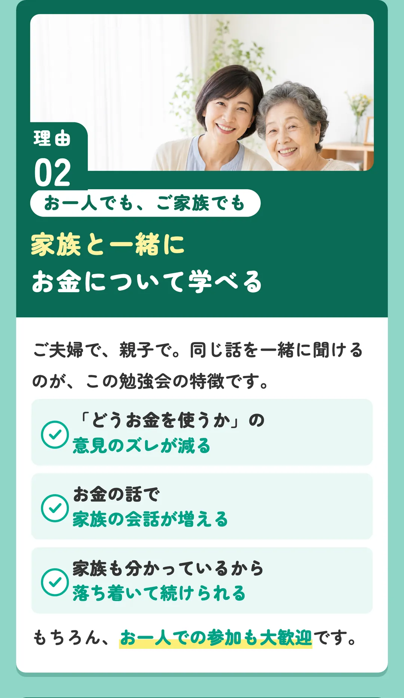
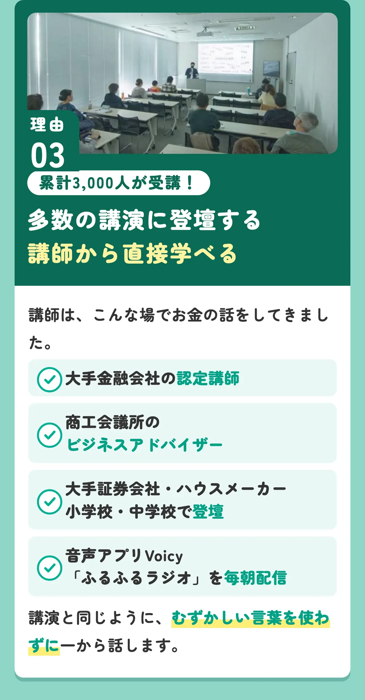
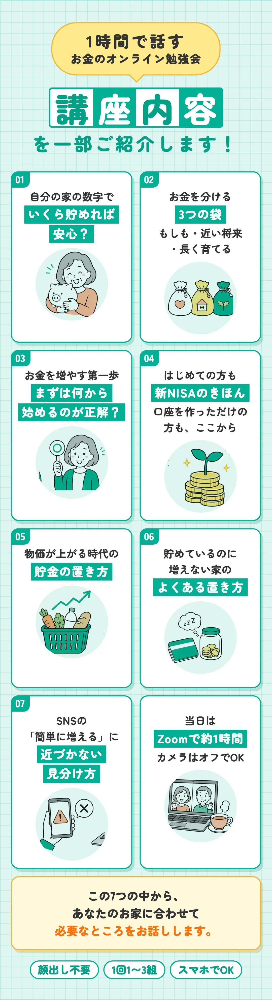
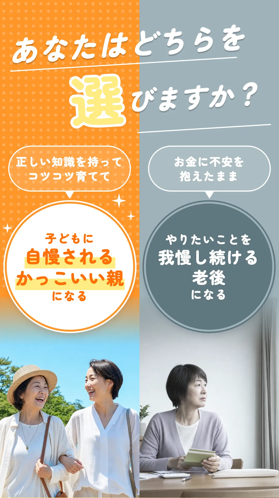
![［写真：ホワイトボードの前で話す講師］LECTURER講師紹介／PROFILE／森川満章fulfull株式会社代表／1986年生まれ、岩手出身、横浜在住。3児の父／大手金融会社の認定講師、商工会議所のビジネスアドバイザー／音声アプリVoicy「ふるふるラジオ」を毎朝配信／これまでの登壇先（一部）／大手証券会社／大手ハウスメーカー／大手金融会社／小学校・中学校／講演・授業でも、この勉強会でも、商品のご案内はしていません。／MESSAGE同じ悔しさを、ひとりでも減らしたい。／僕は30歳まで、お金のことをほとんど勉強せず、貯金もないような状態でした。バスケを習っていた息子に「プロになりたい、海外に行きたい」と言われたとき、そのお金の余裕がなく、「諦めて」と言うしかなかった。その夜、「なんてかっこ悪いんだろう」と、人生でいちばん自分がみじめになりました。そこからお金のことをゼロから学び直して、暮らしも、家族との会話も変わりました。同じ悔しさを、ひとりでも減らしたい。それが、この会を無料で続けている理由です。むずかしい言葉は使いません。はじめてでも、途中からでも、大丈夫です。／Voicy「ふるふるラジオ」毎朝配信／YouTube「ふるふるチャンネル」／Instagram@morikawa_fulfull](img/16_koushi.webp)
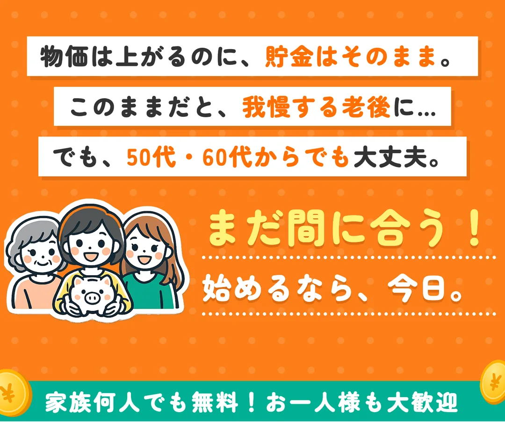
無料・Zoom・1時間LINEで日程を受け取る顔出し不要・1回1〜3名・スマホでOK
LINEが開いたら「追加」を押すだけ。
すぐに日程が届きます。